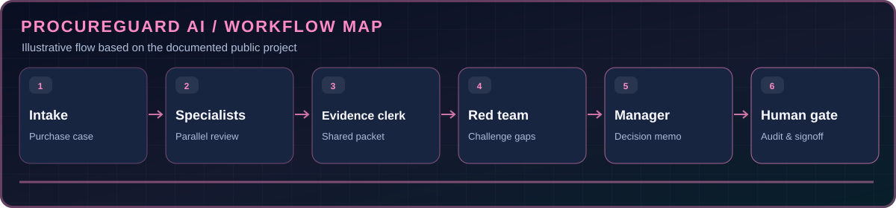

EIGHT AGENT ROLES
Specialist reviews coordinated in a shared procurement workflow.
A vendor-approval decision room combining specialist agent reviews with human signoff.
A vendor-approval decision room combining specialist agent reviews with human signoff. See the source code and documentation for the latest supported features.
Specialist reviews coordinated in a shared procurement workflow.
A red-team reviewer challenges gaps and unsafe assumptions.
Human procurement lead retains final approval authority.
Export decision memo, risk register and SHA-256 audit seal.
Conceptual workflow aligned to the project's published documentation.

Collect purchase, department and vendor details
Finance, vendor, security and legal evidence
Consolidate and cite findings
Challenge missing evidence and risky claims
Recommend conditions and blockers
Sign off and export sealed audit evidence
Installation excerpt from the source repository. Open the README for all requirements.
uv sync && uv run python -m app.mainSource screenshots from the public project repository.
Winner — Best Use of AI/ML API, 2026 Band of Agents Hackathon, Team Purrwolf. Repository distinguishes local simulation from recorded live Band runs.
This case-study page is a portfolio explainer, not a replacement for the active project's README. The source repository remains under @ihtishaam-dev until ownership is transferred.